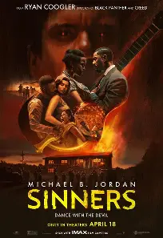
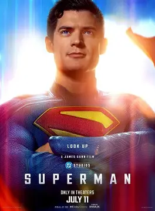
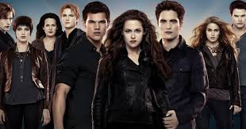
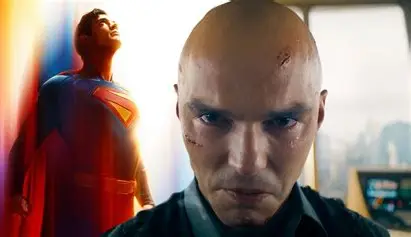

GENRE: Horrow / Musical
RATINGS:
SYNOPIS
Sinners is a 2025 American horror film[a] produced, written, and directed by Ryan Coogler.[10] Set in 1932 in the Mississippi Delta, the film stars Michael B. Jordan in dual roles as criminal twin brothers who return to their hometown, where they are confronted by a supernatural evil. It co-stars Hailee Steinfeld, Miles Caton (in his film debut), Jack O'Connell, Wunmi Mosaku, Jayme Lawson, Omar Benson Miller, and Delroy Lindo.

GENRE: Romance / Fantasy
Ratings:
SYNOPIS
The Twilight Saga is a series of romantic Vampire fantasy films based on the book series Twilight by Stephenie Meyer. The series has grossed over $3.36 billion worldwide. The first installment, Twilight, was released on November 21, 2008.[1] The second installment, New Moon, followed on November 20, 2009.[2] The third installment, Eclipse, was released on June 30, 2010.[3][4] The fourth installment, Breaking Dawn – Part 1, was released on November 18, 2011, while the fifth and final installment, Breaking Dawn – Part 2, was released on November 16, 2012.[5][6]

GENRE: Action / Adventure
Ratings:
SYNOPIS
Superman is a 2025 American superhero film based on the eponymous character from DC Comics. Written and directed by James Gunn, it is the first film in the DC Universe (DCU) and a reboot of the Superman film series. David Corenswet stars as Clark Kent / Superman, alongside Rachel Brosnahan, Nicholas Hoult, Edi Gathegi, Anthony Carrigan, Nathan Fillion, and Isabela Merced. In the film, Superman faces unintended consequences after he intervenes in an international conflict orchestrated by billionaire Lex Luthor (Hoult). Superman must win back public support with the help of his reporter and superhero colleagues. The film was produced by Gunn and Peter Safran of DC Studios.